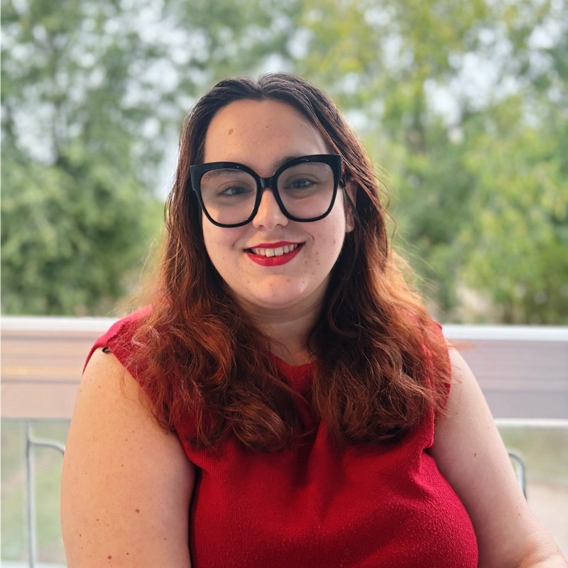

Sobre mí
Estrategia, criterio institucional y una forma de mirar entrenada en disciplinas distintas.
Trabajo en la intersección entre financiación, políticas públicas, economía regenerativa e innovación social para ayudar a proyectos con propósito a convertir una oportunidad en una propuesta sólida.

Experiencia vital
Creatividad para leer sistemas complejos; disciplina para ejecutarlos.
Mi formación artística entrenó una forma de análisis poco lineal: observar patrones, traducir complejidad y construir narrativas capaces de ordenar sistemas donde otros solo ven ruido. La disciplina del taekwondo me dio una segunda estructura: foco, resistencia, respeto por el proceso y capacidad para sostener la exigencia sin perder precisión.
Hoy esa combinación se traduce en mi trabajo: leer instituciones, entender incentivos, detectar oportunidades de financiación y convertir ideas de impacto en propuestas comprensibles, defendibles y ejecutables.
Aloiram Fund es mi plataforma de análisis y consultoría estratégica para proyectos de impacto, donde canalizo mi producción escrita y radar de oportunidades.
Bio para prensa
Mariola Valderraín Navarro es consultora de fundraising estratégico y economía regenerativa, fundadora de Aloiram Fund. Su trabajo conecta políticas públicas, financiación de impacto, análisis regulatorio y construcción de alianzas para proyectos sociales, climáticos y regenerativos. Ha participado en espacios vinculados a COP28, Ashoka, UCM, medios y foros de innovación social, y combina una formación jurídica, política y emprendedora con una trayectoria reconocida en liderazgo, escritura y divulgación.
Previsualización social
LinkedIn e Instagram
Premios y trayectoria
Reconocimientos profesionales, académicos y culturales.
Representación en COP28 en Dubái
Participación vinculada a acción climática y visibilidad internacional de proyectos con impacto.
Finalista de Ashoka Changemakers
Reconocimiento dentro del ecosistema de innovación social y emprendimiento con propósito.
Reconocimiento al liderazgo en Vitoria
Distinción vinculada a liderazgo joven, transformación e impacto público.
Jurado oficial de Premios Emprende Coca-Cola
Evaluación de proyectos innovadores con potencial de impacto y empleabilidad joven.
Premios Compluemprende UCM
Reconocimiento universitario al emprendimiento y la innovación desde la Universidad Complutense.
TFG en Docta UCM sobre startups sociales
Publicación académica centrada en startups sociales, impacto y arquitectura institucional.
Caso de éxito HERA, iniciativa FemTech vinculada a FPDI
Proyecto reconocido por conectar salud, género, innovación y capacidad de ejecución.
MBA UCM
Base ejecutiva para leer estrategia, modelos de negocio, liderazgo y toma de decisiones.
Fast MBA IEA
Formación intensiva en emprendimiento avanzado, estrategia y crecimiento de proyectos.
Top 50 World Women Impact
Reconocimiento a una trayectoria conectada con liderazgo femenino, impacto y transformación.
1er Premio Vallekas Negra 2026
Ganadora del concurso de relatos con "La respiración del hormigón".
3er Premio Paliativos Extremadura
Reconocimiento literario y cultural vinculado a sensibilidad narrativa y mirada social.
2º Premio 25N Totana 2025
Premio literario en torno a memoria, violencia de género y voz pública.
3er Premio Castelló 2025
Reconocimiento en certamen cultural de relato y escritura.
Finalista UCM Terror
Finalista en certamen universitario de narrativa de terror.
Coautoría Ávila 2069
Participación en proyecto editorial colectivo de futuro, ciudad e imaginación pública.
Logros académicos y formación
Base jurídica, política y criminológica
Base ejecutiva, IA y emprendimiento
Certificado MBA UCMEspacio preparado para imagen con alt descriptivo.
Certificado Fast MBA IEAEspacio preparado para imagen con alt descriptivo.
Certificado IA FounderzEspacio preparado para imagen con alt descriptivo.